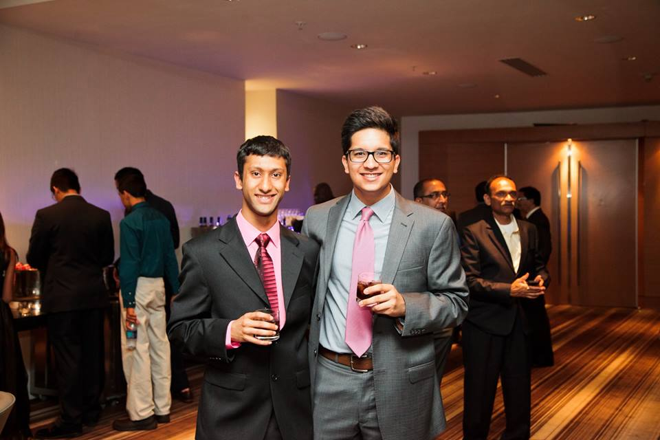

The Creators: Kushal and Yash

(Yash left, Kushal right)
We are two friends who built this site from an idea to aid those who cannot see and hear. Through our class: CSCI 4830/7000 - Kane - Inclusive Design and Assistive Technology, we were able to work on the project throught the semester. We began with an idea for users that cannot see or hear, to be able to play thru a game with purely audio or visual cues, and a simple key bound interface. Our main goal was to create an interface that would allow for easy navigation of our game, which would be a generated story with mulitple outcomes based on your choices. When we began our project we were geared towards a more audio based experince, but as we progressed we realized that we could impliment visual based direction as well so that deaf people could enjoy our game as well. Thru numerous amounts of trial and error we came about with our finished product and hope you enjoy playing it just as much as we enjoyed making the game.